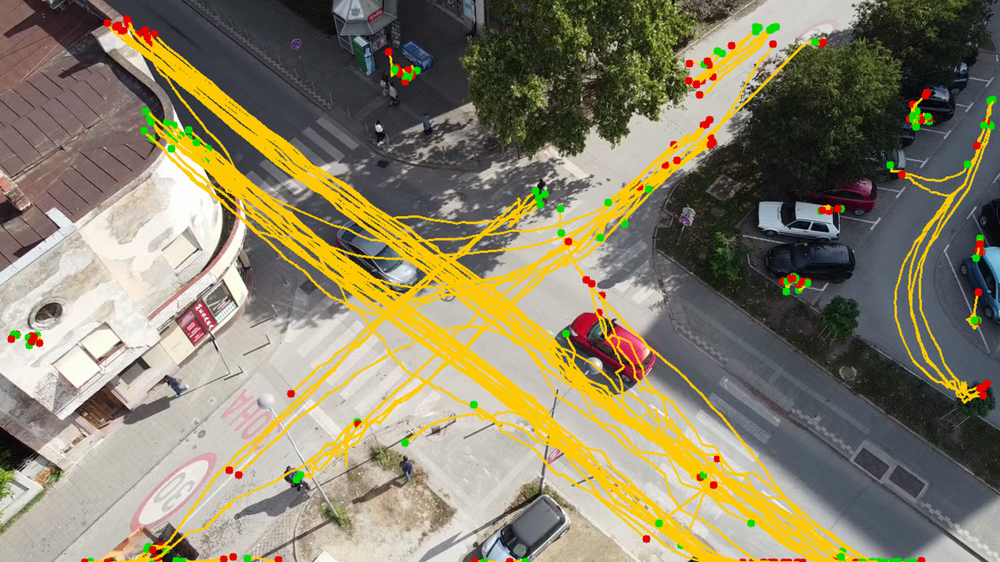
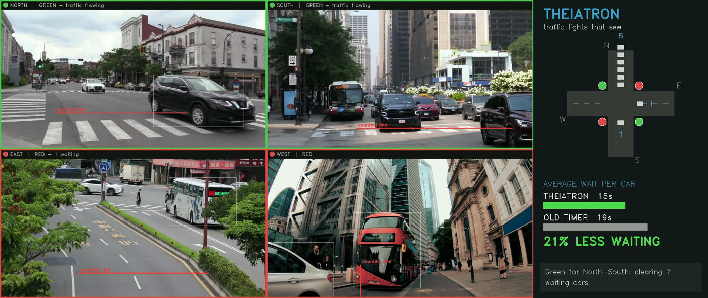

Most signals run on timers set once — blind to the queue in front of them. Theiatron puts a camera and a 6 MB neural network on the pole: it counts real traffic and gives green time where it's needed. No internet. No control room.
The same loop a traffic officer runs with their eyes — at machine speed, all day, on hardware that costs less than a phone.
An on-device detector finds and tracks every vehicle on every approach, ten times a second — cars, buses, bikes, trucks.
Waiting is the enemy. Pixels become how many are stuck on each road, and how long they've been stuck.
Green goes to the pressure — behind hard safety interlocks: never two greens, and a fairness cap so no road is forgotten.
Real footage of a real intersection, filmed from an elevated angle. Every box is a live AI detection; every numbered car is counted into a controlled comparison against an old-style fixed timer — identical traffic, two brains.
The dashboard in action: detections, per-road counting lines, signal state, and the live wait-time gap.

Every vehicle path tracked across 3 minutes — the raw perception behind each decision.

The same engine running four separate camera feeds at once.
| Metric | Old fixed timer | Theiatron | Change |
|---|---|---|---|
| Modeled average wait per car | 10.9 s | 6.04 s | −45% |
| Modeled 95th-percentile wait | 36.73 s | 17.96 s | −51% |
| Worst single wait | 40.9 s | 20.7 s | cut in half |
Both controllers consumed the identical stream of 40 detected arrivals. These are modeled point-queue waits for this scenario, reproducible from the recorded event data.
The footage above is free-licensed stock from another country. For the challenge finale, Theiatron should run on our own traffic — and that takes one thing I can't get from the ground: an upper window, balcony, or rooftop overlooking an intersection.
BUILDER, THEIATRON · NEXTGEN INNOVATION CHALLENGE